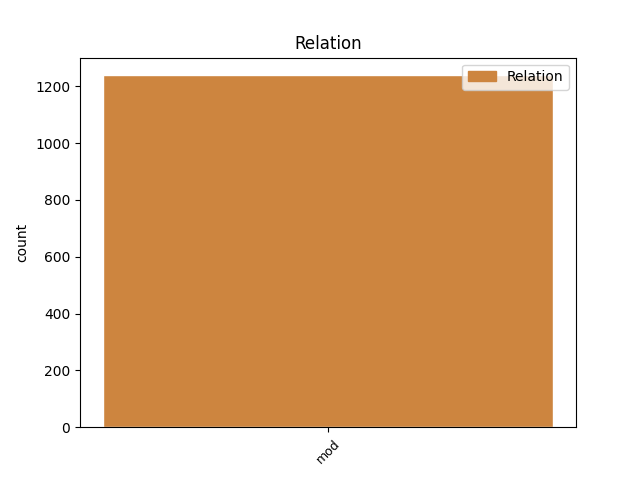
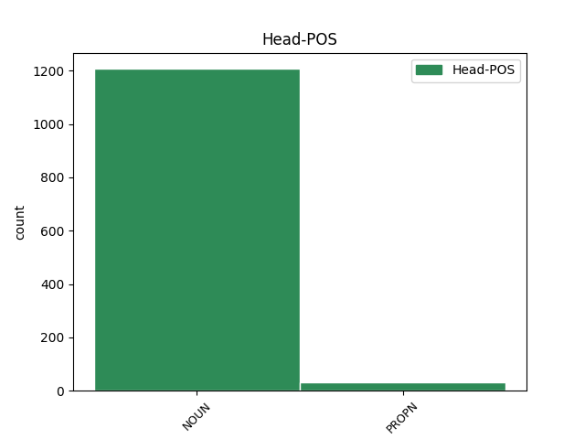
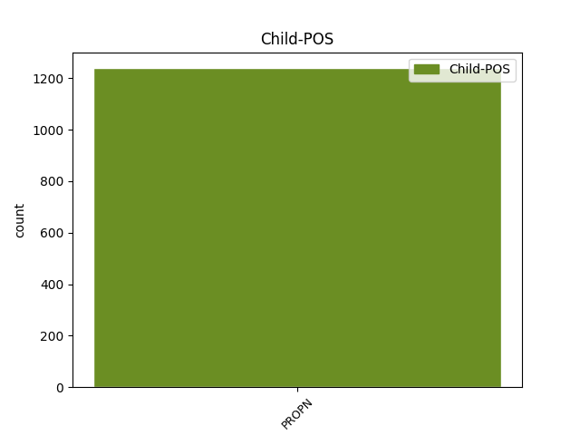

Distribution of features within this leaf



Agreement Rules sorted by frequency.
- When the dependent token is the modifer(mod) of the head token, and the dependent token is PROPN.
1 Prema _ _ _ _ 0 _ _ _
2 mišljenju _ _ _ _ 0 _ _ _
3 pojedinih _ _ _ _ 0 _ _ _
4 američkih _ _ _ _ 0 _ _ _
5 liječnika _ _ _ _ 0 _ _ _
6 , _ _ _ _ 0 _ _ _
7 nekadašnji _ _ _ _ 0 _ _ _
8 čelnik čelnik NOUN Ncmsn Case=Nom|Gender=Masc|Number=Sing 0 _ _ _
9 Applea Apple PROPN Npmsg Case=Gen|Gender=Masc|Number=Sing 8 mod _ _
10 Steve _ _ _ _ 0 _ _ _
11 Jobs _ _ _ _ 0 _ _ _
12 proživljava _ _ _ _ 0 _ _ _
13 posljednje _ _ _ _ 0 _ _ _
14 tjedne _ _ _ _ 0 _ _ _
15 svog _ _ _ _ 0 _ _ _
16 života _ _ _ _ 0 _ _ _
17 . _ _ _ _ 0 _ _ _
Disagree Examples:
1 Neki _ _ _ _ 0 _ _ _
2 tvrde _ _ _ _ 0 _ _ _
3 da _ _ _ _ 0 _ _ _
4 je _ _ _ _ 0 _ _ _
5 presuda presuda NOUN Ncfsn Case=Nom|Gender=Fem|Number=Sing 0 _ _ _
6 Veliji Velija PROPN Npmsd Case=Dat|Gender=Masc|Number=Sing 5 mod _ _
7 Ramkovskom _ _ _ _ 0 _ _ _
8 napad _ _ _ _ 0 _ _ _
9 na _ _ _ _ 0 _ _ _
10 slobodu _ _ _ _ 0 _ _ _
11 medija _ _ _ _ 0 _ _ _
12 , _ _ _ _ 0 _ _ _
13 dok _ _ _ _ 0 _ _ _
14 drugi _ _ _ _ 0 _ _ _
15 tvrde _ _ _ _ 0 _ _ _
16 kako _ _ _ _ 0 _ _ _
17 dokazi _ _ _ _ 0 _ _ _
18 o _ _ _ _ 0 _ _ _
19 njegovim _ _ _ _ 0 _ _ _
20 kaznenim _ _ _ _ 0 _ _ _
21 djelima _ _ _ _ 0 _ _ _
22 govore _ _ _ _ 0 _ _ _
23 suprotno _ _ _ _ 0 _ _ _
24 . _ _ _ _ 0 _ _ _
1 " _ _ _ _ 0 _ _ _
2 Ovo _ _ _ _ 0 _ _ _
3 je _ _ _ _ 0 _ _ _
4 beskompromisna _ _ _ _ 0 _ _ _
5 borba _ _ _ _ 0 _ _ _
6 protiv _ _ _ _ 0 _ _ _
7 kriminala _ _ _ _ 0 _ _ _
8 i _ _ _ _ 0 _ _ _
9 korupcije _ _ _ _ 0 _ _ _
10 koji _ _ _ _ 0 _ _ _
11 postoje _ _ _ _ 0 _ _ _
12 u _ _ _ _ 0 _ _ _
13 svim _ _ _ _ 0 _ _ _
14 zemljama _ _ _ _ 0 _ _ _
15 , _ _ _ _ 0 _ _ _
16 ali _ _ _ _ 0 _ _ _
17 čije _ _ _ _ 0 _ _ _
18 sankcioniranje _ _ _ _ 0 _ _ _
19 ovisi _ _ _ _ 0 _ _ _
20 uglavnom _ _ _ _ 0 _ _ _
21 o _ _ _ _ 0 _ _ _
22 političkoj _ _ _ _ 0 _ _ _
23 volji _ _ _ _ 0 _ _ _
24 relevantnih _ _ _ _ 0 _ _ _
25 čimbenika _ _ _ _ 0 _ _ _
26 i _ _ _ _ 0 _ _ _
27 sposobnosti _ _ _ _ 0 _ _ _
28 institucija _ _ _ _ 0 _ _ _
29 da _ _ _ _ 0 _ _ _
30 neovisno _ _ _ _ 0 _ _ _
31 rade _ _ _ _ 0 _ _ _
32 svoj _ _ _ _ 0 _ _ _
33 posao _ _ _ _ 0 _ _ _
34 " _ _ _ _ 0 _ _ _
35 , _ _ _ _ 0 _ _ _
36 rekao _ _ _ _ 0 _ _ _
37 je _ _ _ _ 0 _ _ _
38 zastupnik zastupnik NOUN Ncmsn Case=Nom|Gender=Masc|Number=Sing 0 _ _ _
39 vladajuće _ _ _ _ 0 _ _ _
40 VMRO VMRO PROPN Npfsg Case=Gen|Gender=Fem|Number=Sing 38 mod _ _
41 Antonio _ _ _ _ 0 _ _ _
42 Milošoski _ _ _ _ 0 _ _ _
43 za _ _ _ _ 0 _ _ _
44 SETimes _ _ _ _ 0 _ _ _
45 . _ _ _ _ 0 _ _ _
1 Željko _ _ _ _ 0 _ _ _
2 Komšić _ _ _ _ 0 _ _ _
3 nastavit _ _ _ _ 0 _ _ _
4 će _ _ _ _ 0 _ _ _
5 obnašati _ _ _ _ 0 _ _ _
6 funkciju _ _ _ _ 0 _ _ _
7 člana _ _ _ _ 0 _ _ _
8 tročlanog _ _ _ _ 0 _ _ _
9 Predsjedništva predsjedništvo NOUN Ncnsg Case=Gen|Gender=Neut|Number=Sing 0 _ _ _
10 BiH BiH PROPN Npfsg Case=Gen|Gender=Fem|Number=Sing 9 mod _ SpaceAfter=No
11 . _ _ _ _ 0 _ _ _
1 Posjet _ _ _ _ 0 _ _ _
2 predsjednika _ _ _ _ 0 _ _ _
3 SDP-a _ _ _ _ 0 _ _ _
4 Beogradu _ _ _ _ 0 _ _ _
5 prošlog _ _ _ _ 0 _ _ _
6 tjedna _ _ _ _ 0 _ _ _
7 bio _ _ _ _ 0 _ _ _
8 je _ _ _ _ 0 _ _ _
9 vrhunac _ _ _ _ 0 _ _ _
10 neslaganja _ _ _ _ 0 _ _ _
11 , _ _ _ _ 0 _ _ _
12 jer _ _ _ _ 0 _ _ _
13 je _ _ _ _ 0 _ _ _
14 Lagumdžija _ _ _ _ 0 _ _ _
15 ignorirao _ _ _ _ 0 _ _ _
16 protivljenje protivljenje NOUN Ncnsa Case=Acc|Gender=Neut|Number=Sing 0 _ _ _
17 Komšića Komšić PROPN Npmsg Case=Gen|Gender=Masc|Number=Sing 16 mod _ SpaceAfter=No
18 , _ _ _ _ 0 _ _ _
19 članova _ _ _ _ 0 _ _ _
20 i _ _ _ _ 0 _ _ _
21 pristaša _ _ _ _ 0 _ _ _
22 stranke _ _ _ _ 0 _ _ _
23 njegovoj _ _ _ _ 0 _ _ _
24 potpori _ _ _ _ 0 _ _ _
25 Jeremiću _ _ _ _ 0 _ _ _
26 . _ _ _ _ 0 _ _ _
1 Posjet _ _ _ _ 0 _ _ _
2 predsjednika _ _ _ _ 0 _ _ _
3 SDP-a _ _ _ _ 0 _ _ _
4 Beogradu _ _ _ _ 0 _ _ _
5 prošlog _ _ _ _ 0 _ _ _
6 tjedna _ _ _ _ 0 _ _ _
7 bio _ _ _ _ 0 _ _ _
8 je _ _ _ _ 0 _ _ _
9 vrhunac _ _ _ _ 0 _ _ _
10 neslaganja _ _ _ _ 0 _ _ _
11 , _ _ _ _ 0 _ _ _
12 jer _ _ _ _ 0 _ _ _
13 je _ _ _ _ 0 _ _ _
14 Lagumdžija _ _ _ _ 0 _ _ _
15 ignorirao _ _ _ _ 0 _ _ _
16 protivljenje _ _ _ _ 0 _ _ _
17 Komšića _ _ _ _ 0 _ _ _
18 , _ _ _ _ 0 _ _ _
19 članova _ _ _ _ 0 _ _ _
20 i _ _ _ _ 0 _ _ _
21 pristaša _ _ _ _ 0 _ _ _
22 stranke _ _ _ _ 0 _ _ _
23 njegovoj _ _ _ _ 0 _ _ _
24 potpori potpora NOUN Ncfsd Case=Dat|Gender=Fem|Number=Sing 0 _ _ _
25 Jeremiću Jeremić PROPN Npmsd Case=Dat|Gender=Masc|Number=Sing 24 mod _ SpaceAfter=No
26 . _ _ _ _ 0 _ _ _